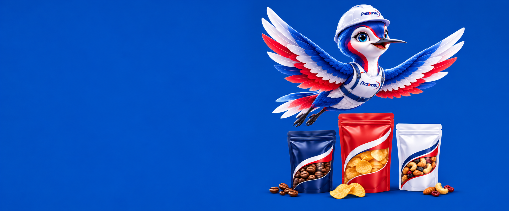
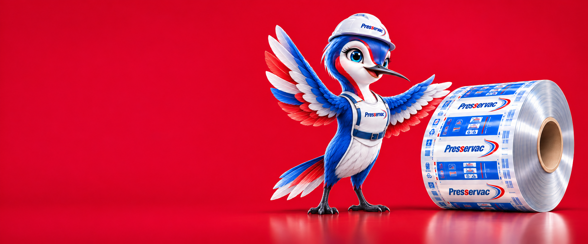
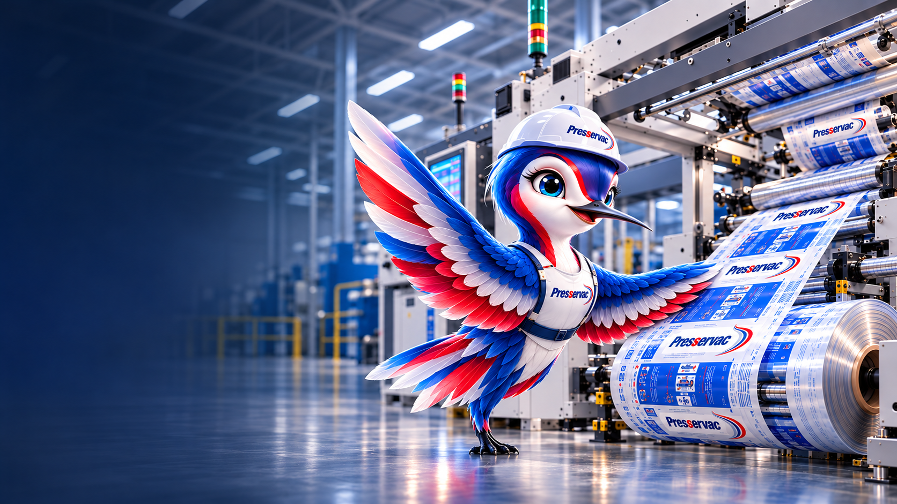
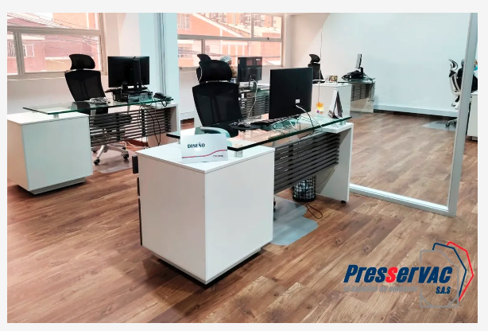
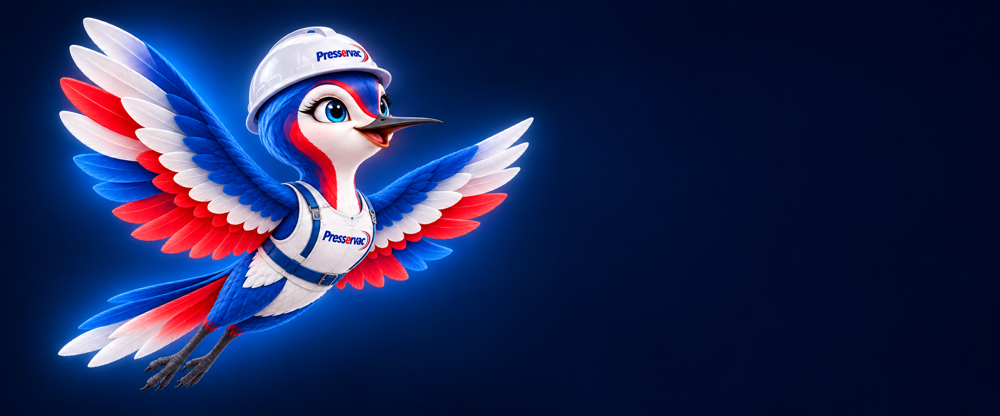

PRESSERVAC · HAGAMOS EQUIPODE TU IDEA
DE TU IDEA
AL PRÓXIMO
EMPAQUE.
Cuéntanos qué tienes en mente.
Empecemos por tu producto.


ASÍ SE HACE UN EMPAQUE PRESSERVACDonde tu empaque
Donde tu empaque
toma forma.
01 — CADA PRODUCTO TIENE SU LUGAR
Encuentra lo que necesitas

El portafolio PresservacMuchas ideas.
Muchas ideas.
Un empaque
para empezar.
Conoce nuestro catálogo y encuentra el punto de partida para tu proyecto.
Conocer el catálogo ↗02 — EXPLORA NUESTRO PORTAFOLIO
Empaques para cada sector
Imágenes ilustrativas. Consulta referencias, características y disponibilidad con nuestro equipo.
03 — IDEAS QUE TOMAN FORMA
Pensados para tu producto

Somos PresservacTu producto
Tu producto
es el comienzo
de la conversación.
Escuchamos lo que necesitas empacar para orientarte entre las opciones de nuestro portafolio. Conoce nuestros espacios en Bogotá y conversemos sobre tu proyecto.
Conócenos ↗Tu producto primero
Cuéntanos qué necesitas empacar.
Exploremos opciones
Consulta formatos y presentaciones.
Comparte tu idea
Envíanos medidas, cantidad y referencia.
Hablemos
Contacta a nuestro equipo comercial.

TU IDEA YA TIENE ALASAhora, démosle
Ahora, démosle
un empaque.
Cuéntanos qué producto tienes en mente.
Nosotros te ayudamos con el siguiente paso.